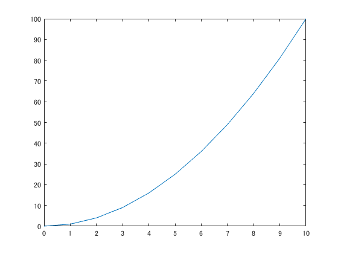
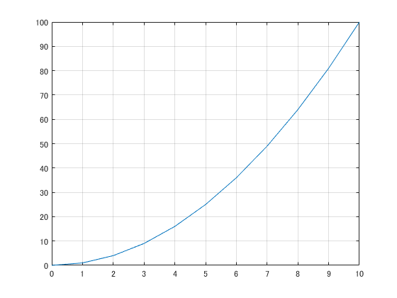
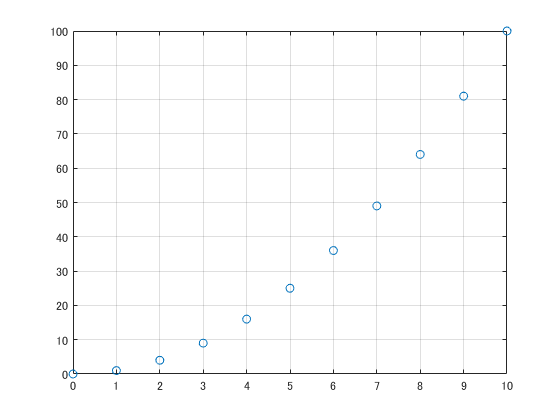
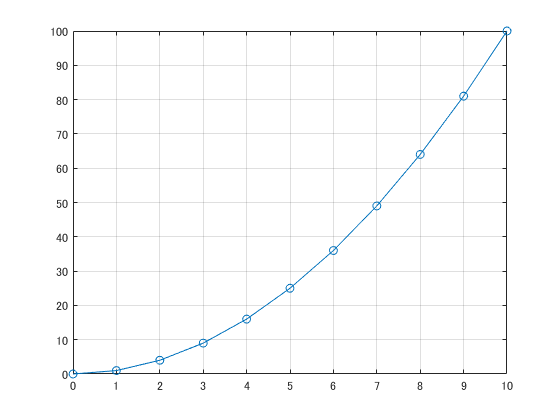
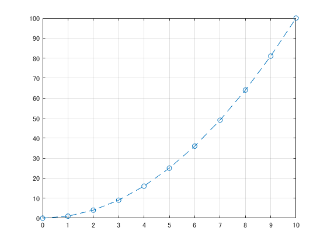
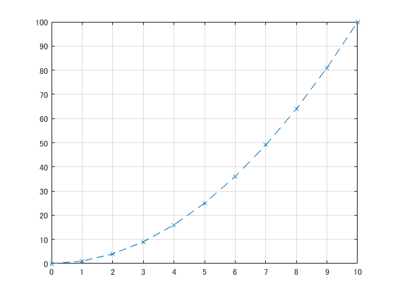
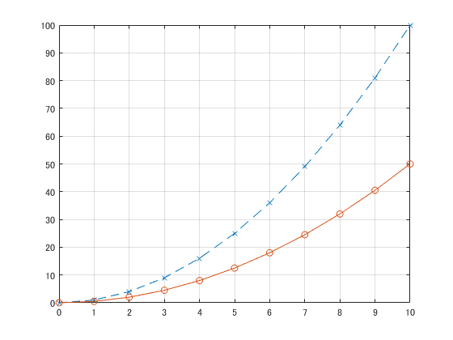
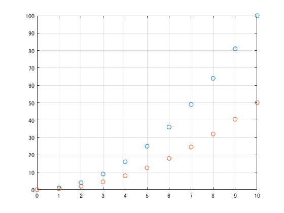
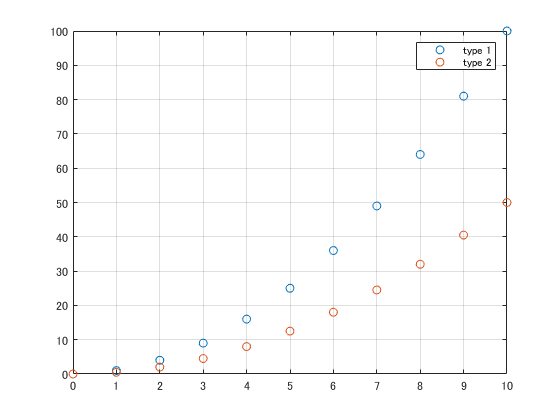
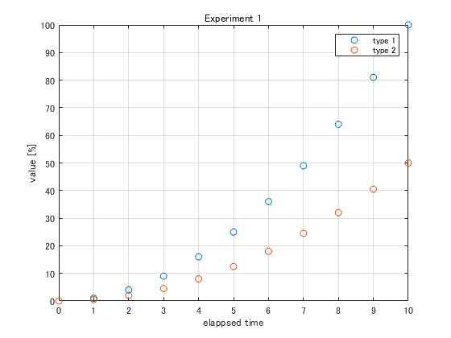

Contents
prepare x and y
create vector ranging from 0 to 10 inclusive
x = [0, 1, 2, 3, 4, 5, 6, 7, 8, 9, 10]; % calculate their squares y = x .^ 2; % check variables x y
x =
0 1 2 3 4 5 6 7 8 9 10
y =
0 1 4 9 16 25 36 49 64 81 100
basic plot
plot(x, y)
basic plot with grid
plot(x, y)
grid on
 scatter
plot(x, y, "o") grid on
connect circles with solid lines
plot(x, y, "o-") grid on
connect circles with dash lines
plot(x, y, "o--") grid on
connect circles with dash lines
plot(x, y, "x--") grid on
draw multiple lines
plot(x, y, "x--") hold on plot(x, y / 2, "o-") hold off grid on
scatter with two types of data
plot(x, y, "o") hold on plot(x, y / 2, "o") hold off grid on
add legend
plot(x, y, "o") hold on plot(x, y / 2, "o") hold off grid on legend("type 1", "type 2")
xlabel, ylabel and title
plot(x, y, "o") hold on plot(x, y / 2, "o") hold off grid on legend("type 1", "type 2") xlabel("elappsed time") ylabel("value [%]") title("Experiment 1")